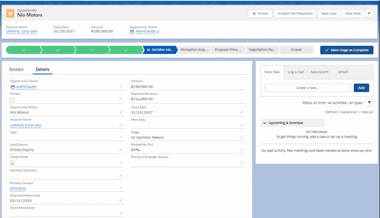
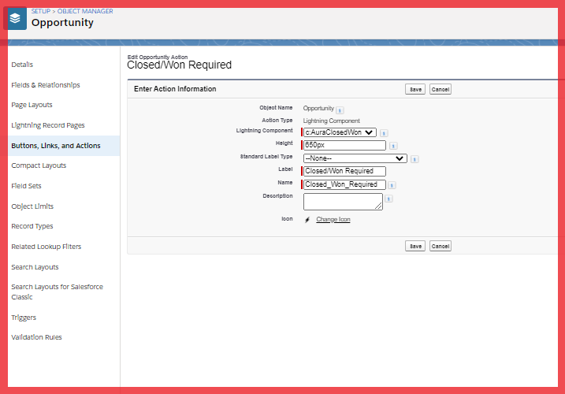
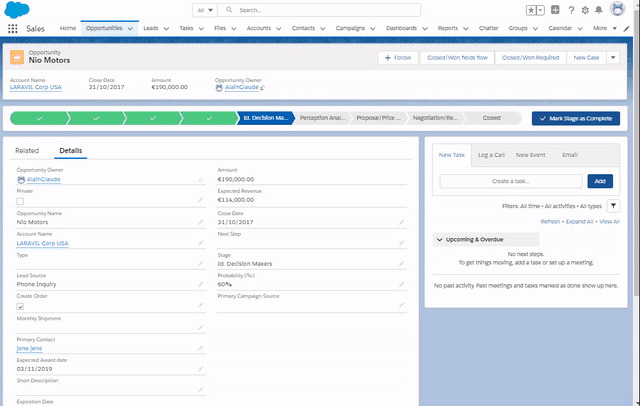
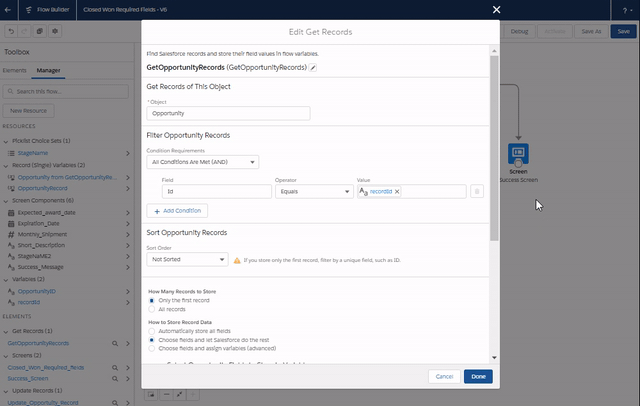
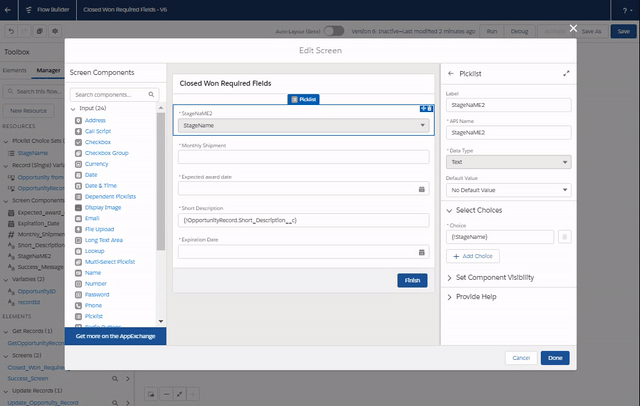
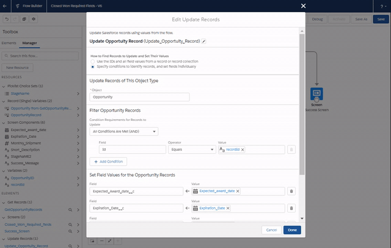
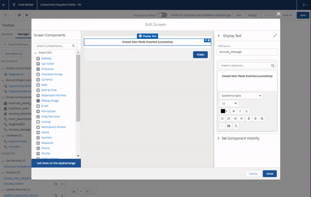
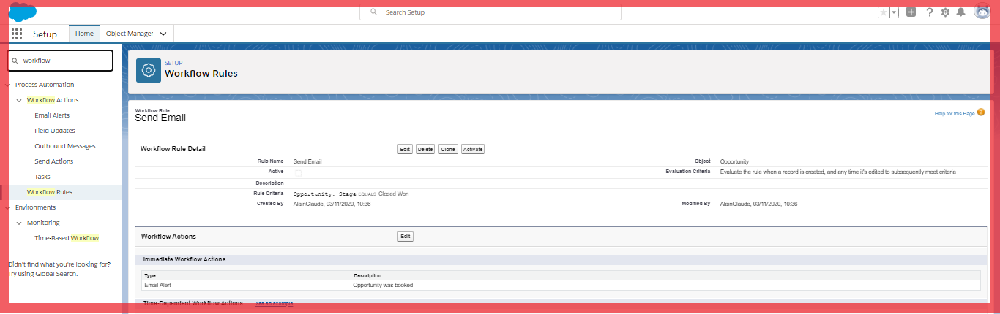

Project : Lightning Flows and LWC
CASE : As a fast paced sales company where every minute counts,my team is stressed that they forget fields they need to fill out when booking an opportunity to closed/Won and they find valdation rules too complicated. So our manager requires both a programmatic and declarative solutions to choose one suitable for the team.Also an automated email should be sent to the opportunity owner's manager letting them know that the opportunity was booked
- Programmatic Approach : Automatically launch a LWC and request the data required fields when an opportunity is moved to closed won.Display the following fields
(a)Monthly shipment
(b)primary contact
(c)expected award date
(d)Short description
(e)Expiration date- Create LWC called ClosedWonOpps.Use lightning record edit form in the html and our input fields to collect input data.handleLoad and submit buttons will be handled in the js file.
- In Js we will import fields using lightning data service .This Fetch records once, reducing network transfers, app server load, and database server load. It Cache record data on the client, separate from component metadata.Fields array is stores all the fetched fields. handleLoad is use to set the spinner to false once reord loads
- Create and aura component AuraClosedWon.Inorder to use our LWC as QUICK ACTION button we need to pass in our LWC as child with its record id in the lightning component(aura) so that it can be seen to create the quick action button.Also for closeQuickAction so that when we click save button ,toast message should show and action automatically closed with page refreshed
- Deploy and go to opportunity under object manager.Create New action called Closed/Won Required and choose lightning component . Adjust the size to 650px or as suitable
- Go to page layout,Mobile and lightning actions and add it
RESULT :click image to view

Steps:

- Declarative Approach :Building out a screen flow that captures the data required when an opportunity is moved to closed won. Same fields as above.
Result : Click Image To View

- First get the opportuniy record and the fields needed for the flow and store in the variable
- Use a screen to display fields and collect information from the user
- Update the opportunity
- A last screen to display success message




- Sending an automated email to the opportunity owner's manager letting them know that the opportunity was booked .
- Go to setup and create a new Workflow with a criteria when Opportunity stage is Closed/Won to opportunity owner's manager
